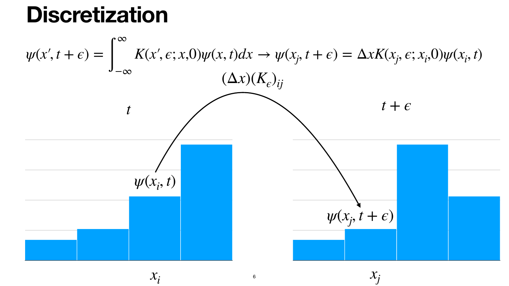

Lab 05: Assignment 1 tutorial#
Follow a wave packet through time.
Open Assignment 1 beside this notebook. We’ll use a free particle to practice the calculation, then you’ll apply it to the harmonic oscillator in the assignment.
Open your own copy through the rocket menu: DataHub or Colab. In Colab, choose File → Save a copy in Drive, then Connect. Run the cells from the top.
What are we trying to predict?#
Start with the wavefunction. Predict what it becomes.
Imagine a particle prepared in a localized Gaussian packet. We know its initial wavefunction \(\psi(x,0)\). We want to know how it changes with time and what that predicts for measurements of position and energy.
The wavefunction assigns a complex amplitude to each position. Both its magnitude and phase matter. Its absolute square gives the probability density:
The probability of finding the particle in a small interval of width \(\Delta x\) is approximately \(P(x,t)\Delta x\). Our notebook stores the amplitude at every grid point, evolves those amplitudes, then calculates the density and expectation values.
Lecture reference: Lecture 02, slide 3: states and probabilities, and slide 5: expectation values.
Where do the paths enter?#
Add amplitudes before taking the absolute square.
In the double-slit discussion, different routes contributed amplitudes to the same destination. The path integral extends that idea to all paths between the endpoints. Each path contributes an amplitude proportional to \(e^{iS/\hbar}\), where \(S\) is its action. Those complex contributions can reinforce or cancel.
The propagator \(\mathcal K(x_b,t_b;x_a,t_a)\) packages that path sum into the amplitude for propagation between a starting point and a destination. Lecture already gave us its formula for the free particle and the oscillator. We’ll use those formulas to evolve a whole wave packet.
Lecture reference: Lecture 03, slides 4–6: routes become a path sum, and slide 14: action and phase.
How does a propagator move a whole packet?#
Pick a destination. Add the contributions from every starting position.
The initial packet has amplitude across many positions. At a chosen destination \(x_b\), weight each starting amplitude by the propagator and integrate:
Do that for every destination and you have the entire new wavefunction. The kernel carries the dynamics. The wavefunction tells us which initial state we’re evolving.
Aside: the same transformation in ket and vector notation
Same linear map. Two ways to write it.
Take an arbitrary linear operator \(\hat T\). Call the input state \(\psi\) and the output \(\phi\).
1. Ket notation: act on the whole state.
The ket names the state without choosing a basis for its components.
2. Vector notation: choose a basis and multiply by a matrix.
In an orthonormal basis, \(\psi_i=\langle i|\psi\rangle\) and \(T_{ji}=\langle j|\hat T|i\rangle\). For a two-component example,
Each output component adds contributions from every input component: \(\phi_j=\sum_i T_{ji}\psi_i\). The entries can be complex.
For this lab, the transformation advances time.
Choose \(\hat T=\hat U(\epsilon)\), the time-evolution operator. The input is \(|\psi(t)\rangle\) and the output is \(|\psi(t+\epsilon)\rangle\). Its matrix elements in the position basis are the propagator:
On our uniform grid, the vector stores sampled values \(\psi_i=\psi(x_i,t)\). Set \(T_{ji}=\Delta x\,\mathcal K_\epsilon(x_j,x_i)\); then \(\boldsymbol\psi(t+\epsilon)\approx T\boldsymbol\psi(t)\) approximates the integral above. The \(\Delta x\) is the integration weight. Our normalization check is \(\Delta x\sum_i|\psi_i|^2\approx1\).
An arbitrary linear map need not preserve the norm. Exact quantum time evolution does; we’ll check how well our grid calculation preserves it.
Lecture reference: Lecture 06, slide 4: propagating a wavefunction. This is the propagator description of the same time evolution discussed in Lecture 07, slide 17: the Schrödinger equation.
What will the computer do?#
Replace the position integral with a grid sum.

Javier Duarte, Lecture 06, slide 6: Discretization. The arrow shows one contribution. The full update sums contributions from every starting position. The bars are schematic amplitudes; our arrays are complex.
Writing the sum explicitly,
Wavefunction vector: one complex amplitude per position.
Propagator matrix: one entry for each destination–source pair.
Matrix–vector product: the sums for every destination at once.
Aside: one matrix multiplication, three new amplitudes
One row. One destination.
Suppose our grid has three positions, with current complex amplitudes \(a\), \(b\), and \(c\). Include the grid spacing in the matrix: \(M_{ji}=\Delta x\,\mathcal K_\epsilon(x_j,x_i)\). One update is
For example, the middle row gives
Each row collects contributions from all three source positions for one destination. Each column tells us how one source contributes to the different destinations. The new vector is our grid approximation to the wavefunction one time step later. A larger grid does the same multiplication with more rows and columns.
Repeating the multiplication advances another time step. Multiplying two kernels sums over an intermediate position. Further products sum over further intermediate positions, so we can account for the paths through the grid without listing each path. This notebook evaluates those sums deterministically.
Lecture reference: Lecture 06, slides 5–6: chaining and discretization. For the picture of a path divided into time slices, revisit Lecture 03, slide 18.
Why practice with a free particle?#
Keep the calculation structure. Change the physical system.
Today’s free particle |
Assignment 1 oscillator |
|
|---|---|---|
Potential |
\(V(x)=0\) |
\(V(x)=x^2/2\) in the assignment’s units |
Packet motion |
A Gaussian spreads; its center drifts if it has mean momentum |
The displaced packet’s center oscillates in the confining potential |
Propagator |
We’ll first check motion we can predict for the free particle. For the assignment, use the kernel, potential, initial state, grid, and time interval specified in the handout. The grid sums, storage of successive states, and plotting tools carry over.
Each saved state lets us calculate \(|\psi|^2\), mean position, and energy. Those are the quantities we’ll compare with our expectations before trusting the animation.
Before we code: if a packet’s center stays still, can its probability density still change? Keep that question in mind when we vary its initial momentum.
What we’ll practice#
Assignment |
What we’ll practice |
|---|---|
A |
Build a complex propagator and compose eight steps |
B |
Evolve the state and calculate mean position |
C |
Calculate kinetic, potential, and total energy |
D |
Select the requested times and distinguish amplitude from density |
E |
Save a 17-frame demo; use 129 frames for the assignment |
Bonus |
Track normalization and diagnose a bad grid |
Submission |
Use your TSN and write the required |
Get the packages ready#
Imports first.
On DataHub, use the course environment. If a package is missing there, ask me. In Colab or your local environment, uncomment the install cell if needed, run it, then comment it again. Restart the kernel if prompted and rerun the imports.
# %pip install numpy matplotlib pillow
import json
from pathlib import Path
import numpy as np
import matplotlib.pyplot as plt
from matplotlib.animation import FuncAnimation, PillowWriter
from IPython.display import Image, display
Set up the grid#
400 intervals. 401 positions. 16 steps. 17 states.
We’ll use a short free-particle run that shows motion and spreading while keeping almost all of the packet inside the grid. Both endpoints count. So does the initial state at \(t=0\). We use \(m=\hbar=1\).
Today’s free-particle demo |
Assignment 1 oscillator |
|
|---|---|---|
Position range |
\([-6,9]\) |
\([-4,4]\) |
Spatial intervals |
\(N_D=400\) |
\(N_D=600\) |
Final time |
\(T_{\rm end}=1.5\) |
\(T_0=2\pi\), one oscillator period |
Time steps |
16 |
128 |
Step size |
\(\Delta t=0.09375\) |
\(\epsilon=T_0/128\) |
Stored states |
17 |
129 |
The free particle has no oscillation period. We’ll keep going later to see when this finite grid stops giving a reliable answer. Use the assignment column when you build your oscillator calculation.
T_end = 1.5
NT = 16
ND = 400
x = np.linspace(-6, 9, ND + 1)
t = np.linspace(0, T_end, NT + 1)
dx = x[1] - x[0]
dt = T_end / NT
print("Positions:", x.shape, "dx:", dx)
print("Times:", t.shape, "dt:", dt)
Start with a Gaussian#
The wavefunction is complex. Probability density is real.
We’ll give the packet mean momentum \(k_0=1\) so we can see its center move:
Use \(\alpha=2\) and \(x_{\rm start}=0\) for this walkthrough. The phase shifts the mean momentum; the packet still has a spread of momenta. For Assignment 1, use your TSN-derived center and \(k_0=0\), as in the handout.
def gaussian(x, center, alpha, k0):
return (alpha / np.pi)**0.25 * np.exp(
-alpha / 2 * (x - center)**2 + 1j * k0 * (x - center)
)
alpha = 2
center = 0.0
k0 = 1.0
psi0 = gaussian(x, center, alpha, k0)
P0 = np.abs(psi0)**2
norm0 = dx * np.sum(P0)
print("Initial norm:", norm0)
Use the absolute square.
\(P(x)=|\psi(x)|^2=\psi(x)\psi^*(x)\). Multiplying by a transpose does not conjugate a complex array. Plot the real and imaginary parts separately when you want to show amplitude.
fig, axes = plt.subplots(1, 2, figsize=(10, 3.5))
axes[0].plot(x, psi0.real, label="Re psi")
axes[0].plot(x, psi0.imag, label="Im psi")
axes[0].set(xlabel="x", ylabel="Amplitude", title="Initial wavefunction")
axes[0].legend()
axes[1].plot(x, P0)
axes[1].set(xlabel="x", ylabel="Probability density", title="Absolute square")
fig.tight_layout()
plt.show()
Get your assignment parameter from your TSN#
Use all nine digits as text.
Your Triton Student Number starts with 2. Let \(d\) be its last two digits and \(s\)
its third-to-last digit. The assignment uses
These are the handout’s example numbers. Keep them for today’s practice. Use your own TSN in your assignment copy and state its \(x_{\rm start}\) in your report. This cell computes the parameter; it does not change our free-particle initial state.
def center_from_tsn(tsn):
if (not isinstance(tsn, str) or len(tsn) != 9
or not tsn.isascii() or not tsn.isdigit() or not tsn.startswith("2")):
raise ValueError("TSN must be a string of nine digits starting with 2.")
d = int(tsn[-2:])
s = int(tsn[-3])
return (-1)**s * (0.5 + d / 200)
for example_tsn in ["212345678", "212345123"]:
print(example_tsn, "->", center_from_tsn(example_tsn))
A: Build the propagator#
A row is the destination. A column is the source.
For a free particle,
x[:, None] is a column of destinations; x[None, :] is a row of sources.
NumPy broadcasts them into a \(401\times401\) matrix. Check those shapes before
working with a full matrix.
For the assignment, implement the harmonic-oscillator kernel printed in Problem A in place of this free-particle kernel, on the assignment’s grid and time step. Keep the row/column convention.
def free_kernel(x_destination, x_source, step):
return (
np.exp(1j * (x_destination - x_source)**2 / (2 * step))
/ np.sqrt(2 * np.pi * 1j * step)
)
K_step = free_kernel(x[:, None], x[None, :], dt)
print("Destination column:", x[:, None].shape)
print("Source row:", x[None, :].shape)
print("Kernel:", K_step.shape, K_step.dtype)
Where does \(\Delta x\) go?#
Each integral contributes one grid spacing.
Define the one-step evolution matrix \(U=\Delta x K_\epsilon\). Then \(\psi_{n+1}=U\psi_n\). The same composition used in A gives the sampled eight-step kernel:
Here eight steps span \(8\Delta t=0.75\). For Assignment 1, rebuild the oscillator matrix on its prescribed grid so that eight steps span \(8\epsilon=T_0/16\).
Use np.linalg.matrix_power, which composes matrices. K_step**8 takes an
elementwise power and does something different.
U = dx * K_step
K8_free = np.linalg.matrix_power(U, 8) / dx
print(K8_free) # NumPy truncates large arrays automatically.
# These must be the same evolution of the initial state.
psi_after_8 = np.linalg.matrix_power(U, 8) @ psi0
print("Eight-step forms agree:", np.allclose(dx * K8_free @ psi0, psi_after_8))
B: Evolve the state and measure position#
Store the initial state, then take 16 steps.
Rows will index time. Columns will index position: a \((17,401)\) array for this demo. Keep the complex amplitudes; we’ll need their spatial derivatives for energy.
def evolve(U, initial_state, steps):
states = np.empty((steps + 1, initial_state.size), dtype=complex)
states[0] = initial_state
for n in range(steps):
states[n + 1] = U @ states[n]
return states
psi = evolve(U, psi0, NT)
P = np.abs(psi)**2
norm = dx * np.sum(P, axis=1)
x_mean = dx * np.sum(P * x[None, :], axis=1)
print("States:", psi.shape, "Mean positions:", x_mean.shape)
Sum over position. Keep time.
\(\langle x\rangle\approx\Delta x\sum_i x_i|\psi(x_i)|^2\).
For arrays shaped (time, position), that’s axis=1.
Before looking: a free particle with mean momentum \(k_0\) should have \(\langle x\rangle=x_{\rm start}+k_0t\) while our finite grid captures the packet. Compare all 17 states over \(0\leq t\leq1.5\). For the assignment’s oscillator and initial state, compare with \(x_{\rm start}\cos t\) over the full period.
fig, ax = plt.subplots(figsize=(7, 3.5))
ax.plot(t, x_mean, "o", markersize=3, label="Grid calculation")
ax.plot(t, center + k0 * t, "--", label="Free-particle prediction")
ax.set(xlabel="t", ylabel="Mean position")
ax.legend()
fig.tight_layout()
plt.show()
Try it: change k0 to 0, then rerun from the Gaussian through this plot.
Predict the mean position first. Change it back to 1 and rerun before continuing.
For B: keep all 129 times when you plot the oscillator’s mean position. A short free-particle comparison does not replace the full-period assignment plot.
C: Calculate energy#
Differentiate along position. Include the grid spacing.
With \(m=\hbar=1\),
np.gradient(psi, dx, axis=1) approximates the spatial derivative.
Leaving out dx changes its units and numerical value.
The kinetic-energy expression assumes the wavefunction is negligible at the boundaries.
The free particle has \(V(x)=0\). For the assignment, use \(V(x)=x^2/2\) and the oscillator states when you evaluate these same expressions.
dpsi_dx = np.gradient(psi, dx, axis=1, edge_order=2)
V_grid = np.zeros_like(x)
K_mean = 0.5 * dx * np.sum(np.abs(dpsi_dx)**2, axis=1)
V_mean = dx * np.sum(P * V_grid[None, :], axis=1)
E_mean = K_mean + V_mean
fig, ax = plt.subplots(figsize=(7, 3.5))
ax.plot(t, K_mean, label="Kinetic", linewidth=3)
ax.plot(t, V_mean, label="Potential")
ax.plot(t, E_mean, "--", label="Total")
ax.set(xlabel="t", ylabel="Mean energy")
ax.legend()
fig.tight_layout()
plt.show()
Check a value, not just a curve.
For our initial Gaussian, the free-particle energy is \(\langle K\rangle=\alpha/4+k_0^2/2=1\). Kinetic and total energy overlap because the potential is zero. Finite differences introduce a small error even before the packet reaches the edges.
For C: plot all three oscillator energies over the full period. Kinetic and potential energy can exchange while the total stays approximately constant.
print("Initial kinetic energy, numerical:", K_mean[0])
print("Initial kinetic energy, analytic:", alpha / 4 + k0**2 / 2)
print("Largest demo norm error:", np.max(np.abs(norm - 1)))
D: Select snapshot times#
Convert times into indices. Use the time step of your calculation.
We’ll take nine snapshots across today’s short demo. With 16 steps, the indices are 0, 2, 4, …, 16, giving a \((9,401)\) density array.
For Assignment 1: the requested times are \(t=mT_0/16\), with \(m=1,\ldots,8\),
plus the initial state. With \(\epsilon=T_0/128\), use indices 0, 8, 16, …, 64.
The assignment’s P field uses those nine oscillator densities, each with 601 values.
snapshot_indices = 2 * np.arange(9)
snapshot_times = t[snapshot_indices]
P_snapshots = P[snapshot_indices]
print("Indices:", snapshot_indices)
print("Times:", snapshot_times)
print("Density snapshots:", P_snapshots.shape)
Label what you’re plotting.
A complex amplitude has real and imaginary parts. Probability density is its absolute square. For the report’s amplitude figure, use both components, clearly labeled. This figure shows the nine free-particle demo times. Use your oscillator states and the assignment’s requested times for the report.
fig, axes = plt.subplots(1, 2, figsize=(11, 4), sharex=True)
colors = plt.cm.viridis(np.linspace(0, 1, len(snapshot_indices)))
for index, color in zip(snapshot_indices, colors):
label = f"t = {t[index]:.4f}"
axes[0].plot(x, psi[index].real, color=color, label=label)
axes[1].plot(x, psi[index].imag, color=color)
axes[0].set(xlabel="x", ylabel="Real amplitude")
axes[1].set(xlabel="x", ylabel="Imaginary amplitude")
axes[0].legend(fontsize=8, ncol=2)
fig.suptitle("Free particle: motion and spreading over the short demo")
fig.tight_layout()
plt.show()
E: Save an animation#
One state per frame. Include \(t=0\).
We’ll animate both parts of the amplitude and the density for context.
frames=len(t) gives 17 frames for our demo. Set fixed vertical limits so the
scale stays consistent. GIF output uses Pillow, so this cell doesn’t need an external
video encoder. Six frames per second gives us time to follow the short sequence.
The cell writes free_particle_demo.gif in the notebook’s working directory.
Open it from the file browser or display it below.
For Assignment 1 E: animate all 129 oscillator states over \(T_0=2\pi\), with one frame per \(\epsilon=T_0/128\), and save that GIF or MP4 with your work.
fig, axes = plt.subplots(1, 2, figsize=(9, 3.5))
real_line, = axes[0].plot(x, psi[0].real, label="Re psi")
imag_line, = axes[0].plot(x, psi[0].imag, label="Im psi")
density_line, = axes[1].plot(x, P[0])
amplitude_limit = 1.1 * np.max(np.abs(psi))
axes[0].set(xlim=(x[0], x[-1]), ylim=(-amplitude_limit, amplitude_limit),
xlabel="x", ylabel="Amplitude")
axes[0].legend(loc="upper right")
axes[1].set(xlim=(x[0], x[-1]), ylim=(0, 1.1 * P.max()),
xlabel="x", ylabel="Probability density")
time_label = fig.suptitle("")
fig.tight_layout(rect=(0, 0, 1, 0.9))
def update_frame(n):
real_line.set_ydata(psi[n].real)
imag_line.set_ydata(psi[n].imag)
density_line.set_ydata(P[n])
time_label.set_text(f"Free particle: t = {t[n]:.4f}; norm = {norm[n]:.6f}")
return real_line, imag_line, density_line, time_label
animation = FuncAnimation(fig, update_frame, frames=len(t), interval=1000 / 6)
gif_path = Path("free_particle_demo.gif")
animation.save(gif_path, writer=PillowWriter(fps=6), dpi=80)
plt.close(fig)
print("Saved:", gif_path.resolve(), "with", len(t), "frames")
display(Image(filename=str(gif_path)))
Check normalization before trusting a result#
A smooth curve can still be wrong.
We already computed \(\mathcal N(t)=\Delta x\sum_i|\psi_t(x_i)|^2\). Plot it for every step. Don’t divide each state by its norm to hide drift. The main demo should stay close to one. The next section tests what happens when we keep using the same grid for longer.
fig, ax = plt.subplots(figsize=(7, 3.5))
ax.plot(t, norm, "o-", markersize=3, label="Free-particle grid calculation")
ax.axhline(1, color="black", linestyle="--", label="Exact full-line norm")
ax.set(xlabel="t", ylabel="Norm", ylim=(0.99, 1.01))
ax.legend()
fig.tight_layout()
plt.show()
Keep going: when the grid stops working#
Same matrix. Same spacing. More steps.
Predict first: should a free Gaussian develop extra peaks in its probability density? It should move and spread while remaining Gaussian. We’ll take 32 more steps, starting from the last demo state, to reach \(t=4.5\).
The extra history goes in separate arrays. We keep every raw amplitude and do not renormalize. The exact free-particle solution gives us a reference at the same positions and times; it is not used to advance the numerical state.
extra_steps = 32
continued = evolve(U, psi[-1], extra_steps)
psi_long = np.concatenate([psi, continued[1:]], axis=0)
t_long = dt * np.arange(len(psi_long))
P_long = np.abs(psi_long)**2
norm_long = dx * np.sum(P_long, axis=1)
def exact_free_gaussian(positions, times, center, alpha, k0):
width = 1 + 1j * alpha * times
return (alpha / np.pi)**0.25 / np.sqrt(width) * np.exp(
-alpha * (positions - center - k0 * times)**2 / (2 * width)
+ 1j * k0 * (positions - center) - 0.5j * k0**2 * times
)
psi_exact = exact_free_gaussian(x[None, :], t_long[:, None], center, alpha, k0)
P_exact = np.abs(psi_exact)**2
norm_exact_window = dx * np.sum(P_exact, axis=1)
density_error = dx * np.sum(np.abs(P_long - P_exact), axis=1)
print("Extended states:", psi_long.shape, "Final time:", t_long[-1])
Compare the shape, not just the norm.
The exact packet also loses probability inside this window as it spreads beyond the edges. Its total probability on the whole line stays one. We’ll plot both the numerical and exact in-window probabilities, then measure their density difference:
The dotted vertical line marks the end of our short demo. Look for where the numerical curves start departing from the exact solution.
fig, axes = plt.subplots(1, 3, figsize=(14, 3.8))
for index, color in zip([NT, NT + 16, NT + 32], ["C0", "C1", "C2"]):
axes[0].plot(x, P_long[index], color=color, label=f"t = {t_long[index]:.1f}")
axes[0].plot(x, P_exact[index], "--", color=color)
axes[0].set(xlabel="x", ylabel="Probability density", title="Solid: grid; dashed: exact")
axes[0].legend()
axes[1].plot(t_long, norm_long, label="Grid calculation")
axes[1].plot(t_long, norm_exact_window, "--", label="Exact, inside this window")
axes[1].axhline(1, color="black", linestyle=":", label="Exact, whole line")
axes[1].set(xlabel="t", ylabel="Probability in the window")
axes[1].legend(fontsize=8)
axes[2].semilogy(t_long[1:], density_error[1:])
axes[2].set(xlabel="t", ylabel="Integrated absolute density error")
for ax in axes[1:]:
ax.axvline(T_end, color="gray", linestyle=":")
fig.tight_layout()
plt.show()
The extra peaks are numerical artifacts.
Repeatedly cutting the state off at the grid edges changes its subsequent evolution. Finite spatial sampling adds error too. The free particle has no physical wall here, so the distorted late curves are not the motion we’re trying to model.
Ask yourself: can the norm stay near one while the shape is already wrong?
Try it: increase
NDwhile keeping the window anddtfixed, then rerun. Which errors shrink? Which remain because the window is still too small?Next check: a larger window also needs enough spatial points to sample the oscillatory kernel. Check against the exact curve again; changing one parameter does not automatically make the calculation accurate.
Optional: prepare for the bonus#
A smaller time step can make an oscillatory kernel harder to sample.
For the free kernel, its phase changes faster across \(x_a\) when \(\epsilon\) decreases. A grid that misses those oscillations can fail even though the continuous kernel is exact. This is a different issue from the packet leaving the window.
For the assignment’s bonus, use the oscillator kernel, \(T_0=2\pi\), the assignment’s \([-4,4]\) window, and your TSN-derived initial state. Before running, predict the norm behavior for:
Time step |
Spatial intervals |
Steps over \(T_0\) |
|---|---|---|
\(T_0/16\) |
600 |
16 |
\(T_0/512\) |
600 |
512 |
\(T_0/128\) |
150 |
128 |
Rebuild x, dx, t, the initial state, and the propagator for each case.
Record each case’s raw norm and plot it against its own time array with ax.semilogy.
Don’t renormalize. Relate the results to the kernel’s phase change between neighboring
positions, then investigate the smallest usable time step and what doubling \(N_D\) changes.
Write the assignment results#
Save numbers from your calculation. Check their shapes.
Assignment 1’s code submission includes results.json. The autograded results
are worth 20 of 50 points; the report supplies the remaining 30.
Use the exact names below. JSON needs ordinary numbers and lists, not NumPy arrays
or complex numbers. Split the complex kernel row into real and imaginary lists.
Field |
Required content |
|---|---|
|
Your nine-digit TSN as a string |
|
The corresponding initial center |
|
Row 300 of the eight-step kernel, 601 values in each list |
|
Mean position at all 129 times |
|
Each energy at all 129 times |
|
Nine density snapshots, each with 601 values, at indices 0, 8, …, 64 |
On the assignment grid, row 300 is the destination \(x_b=0\). Export K8eps, not U**8 or the one-step kernel.
The helper below expects oscillator results on the assignment grid, not the
smaller demo arrays. It checks parameters, array sizes, and finite values. Those checks do
not establish that the physics is right.
def assignment_results(tsn, x_start, K8eps, x_mean, V, K, E, P_snapshots):
if not np.isclose(x_start, center_from_tsn(tsn), rtol=0, atol=1e-12):
raise ValueError("x_start does not match the TSN.")
expected = {
"K8eps": (K8eps, (601, 601)),
"x_mean": (x_mean, (129,)),
"V": (V, (129,)), "K": (K, (129,)), "E": (E, (129,)),
"P": (P_snapshots, (9, 601)),
}
arrays = {}
for name, (values, shape) in expected.items():
values = np.asarray(values)
if values.shape != shape or not np.isfinite(values).all():
raise ValueError(f"{name} must have shape {shape} and contain finite values.")
if name != "K8eps" and np.iscomplexobj(values):
raise ValueError(f"{name} must contain real values.")
arrays[name] = values
if np.any(arrays["P"] < 0):
raise ValueError("P must be a nonnegative probability density.")
row = arrays["K8eps"][300]
return {
"tsn": tsn, "x_start": float(x_start),
"K8eps_row": {"re": row.real.tolist(), "im": row.imag.tolist()},
"x_mean": arrays["x_mean"].tolist(),
"V": arrays["V"].tolist(), "K": arrays["K"].tolist(), "E": arrays["E"].tolist(),
"P": arrays["P"].tolist(),
}
Practice saving first.
This small file teaches JSON writing and reading using our free-particle data.
It is named free_particle_practice.json and does not use the submission schema.
That keeps the practice file distinct from your oscillator results.
practice = {"model": "free particle", "t": t.tolist(), "norm": norm.tolist()}
practice_path = Path("free_particle_practice.json")
with practice_path.open("w") as f:
json.dump(practice, f, indent=2, allow_nan=False)
with practice_path.open() as f:
loaded_practice = json.load(f)
print(loaded_practice["model"], "saved times:", len(loaded_practice["t"]))
Use this in your assignment notebook#
Run this after calculating the oscillator results.
Copy this block into your assignment notebook along with center_from_tsn and
assignment_results. Replace YOUR_TSN and connect each ho_... name to the
corresponding array from your oscillator calculation on the assignment grid. The ho_P array contains
the full density history. This is a template, not a cell to run on our free-particle data.
tsn = "YOUR_TSN"
x_start = center_from_tsn(tsn)
# Build your initial state with this x_start before propagating it.
results = assignment_results(
tsn, x_start, ho_K8eps, ho_x_mean,
ho_V, ho_K, ho_E, ho_P[8 * np.arange(9)],
)
with open("results.json", "w") as f:
json.dump(results, f, indent=2, allow_nan=False)
with open("results.json") as f:
saved = json.load(f)
print("Saved TSN:", saved["tsn"])
print("Snapshot dimensions:", np.asarray(saved["P"]).shape)
A file that parses successfully can still contain the wrong calculation. Use your norm, mean-position, and energy checks before exporting. Gradescope immediately reports whether it can read the file and whether its parameters match your TSN. The autograded score appears after the deadline; you can resubmit before it.
Before you submit#
Restart. Run all. Open the saved files.
A: include the truncated eight-step oscillator matrix in your report.
B–C: label the full-period position and energy plots; include the energy legend.
D: show the initial amplitude and the eight requested times. Label real and imaginary parts.
E: open your saved GIF or MP4 and check that it covers all 129 states.
Code: upload your source and
results.jsonunder Assignment 1 Code.Report: upload one PDF under Assignment 1, including the AI use appendix.
Bonus: include your predictions and raw norm plots if you attempt it.
Due Monday, October 19 at 8:00 PM. Thursday’s Lab 06 is for Assignment 1 help. Bring runnable code to Lab 07 on Tuesday, October 20 for your oral checkpoint. Be ready to explain a time step, a grid sum, and one check on your result.
If a result looks wrong, bring me the smallest calculation that shows it.